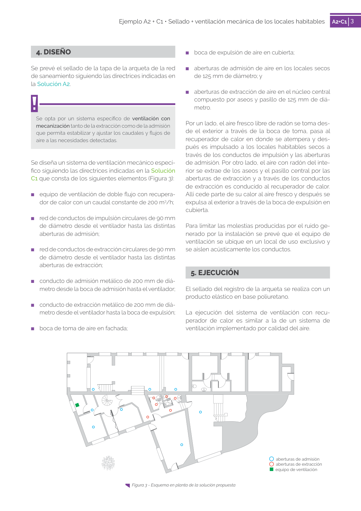

GUIA · Página 80 · versión sin-fecha
SHA256: e58e54b822cf4ab00e258f0eb50c0f06a8c04e3730a7f530d224485e2a5bb02e · página física 80 de 82 · métodos de encabezado
solo si están cotejados.
Formatos: Markdown · JSON de bloques · PDF p. 80 · imagen PNG
Página gráfica: el texto extraído puede ser parcial. Prevalece la imagen/PDF; depende de ellos.
3 Ejemplo A2 + C1 • Sellado + ventilación mecánica de los locales habitables A2+C1 3 4. DISEÑO Se prevé el sellado de la tapa de la arqueta de la red de saneamiento siguiendo las directrices indicadas en la Solución A2. Se opta por un sistema específico de ventilación con mecanización tanto de la extracción como de la admisión que permita estabilizar y ajustar los caudales y flujos de aire a las necesidades detectadas. Se diseña un sistema de ventilación mecánico especí fico siguiendo las directrices indicadas en la Solución C1 que consta de los siguientes elementos (Figura 3): ■ equipo de ventilación de doble flujo con recupera dor de calor con un caudal constante de 200 m3/h; ■ red de conductos de impulsión circulares de 90 mm de diámetro desde el ventilador hasta las distintas aberturas de admisión; ■ red de conductos de extracción circulares de 90 mm de diámetro desde el ventilador hasta las distintas aberturas de extracción; ■ conducto de admisión metálico de 200 mm de diá metro desde la boca de admisión hasta el ventilador; ■ conducto de extracción metálico de 200 mm de diá metro desde el ventilador hasta la boca de expulsión; ■ boca de toma de aire en fachada; ■ boca de expulsión de aire en cubierta; ■ aberturas de admisión de aire en los locales secos de 125 mm de diámetro; y ■ aberturas de extracción de aire en el núcleo central compuesto por aseos y pasillo de 125 mm de diá metro. Por un lado, el aire fresco libre de radón se toma des de el exterior a través de la boca de toma, pasa al recuperador de calor en donde se atempera y des pués es impulsado a los locales habitables secos a través de los conductos de impulsión y las aberturas de admisión. Por otro lado, el aire con radón del inte rior se extrae de los aseos y el pasillo central por las aberturas de extracción y a través de los conductos de extracción es conducido al recuperador de calor. Allí cede parte de su calor al aire fresco y después se expulsa al exterior a través de la boca de expulsión en cubierta. Para limitar las molestias producidas por el ruido ge nerado por la instalación se prevé que el equipo de ventilación se ubique en un local de uso exclusivo y se aíslen acústicamente los conductos. 5. EJECUCIÓN El sellado del registro de la arqueta se realiza con un producto elástico en base poliuretano. La ejecución del sistema de ventilación con recu perador de calor es similar a la de un sistema de ventilación implementado por calidad del aire. Figura 3 - Esquema en planta de la solución propuesta aberturas de admisión aberturas de extracción equipo de ventilación
